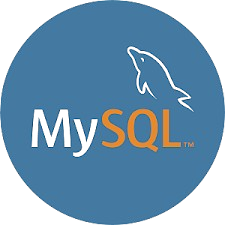

Fundamentos do Full-Stack
FRONT-END
HTML

HTML é uma linguagem de marcação usada para estruturar o conteúdo das páginas da web. Ela define o corpo e os elementos da página.
CSS

CSS é uma linguagem de estilo. Ela define como o conteúdo HTML será exibido para o usuário. Permite controlar o layout, cores, fontes, espaçamento e comportamento responsivo em diferentes tamanhos de tela.
JavaScript

JavaScript é uma linguagem de programação amplamente usada no desenvolvimento web. Ela lida com interatividade, lógica e o comportamento dinâmico das páginas da web.
BACK-END
Python
Python é uma linguagem de programação de alto nível conhecida por sua simplicidade e versatilidade. É usada principalmente para automação, análise de dados, inteligência artificial e mais.
JavaScript (Node.js)

JavaScript com Node.js permite executar JavaScript no back-end. É leve, rápido e ideal para aplicações em tempo real, APIs e microsserviços.
Java

Java é uma linguagem de programação orientada a objetos. É segura, robusta e versátil, sendo amplamente usada em aplicações empresariais.
C#

C# é uma linguagem de programação moderna orientada a objetos desenvolvida pela Microsoft. É usada para aplicações empresariais, serviços web (com ASP.NET), jogos (com Unity) e sistemas de back-end.
BASE DE DADOS
SQLite

SQLite é um banco de dados relacional leve e embutido que armazena dados em um único arquivo (.db). Ele usa SQL padrão e é principalmente utilizado em aplicativos móveis.
MySQL 
MySQL é um banco de dados relacional rápido e gratuito que funciona em um servidor separado e é ideal para aplicativos web e sistemas gerais.
PostgreSQL

PostgreSQL é um banco de dados relacional de código aberto conhecido por sua robustez, escalabilidade e suporte a dados complexos.
MongoDB
MongoDB é um banco de dados NoSQL orientado a documentos projetado para escalabilidade e flexibilidade. Armazena dados no formato JSON (BSON), sendo ideal para dados não estruturados.
GIT E GITHUB
Git

Git é um sistema de controle de versão que gerencia e rastreia mudanças no código, facilitando a colaboração e o histórico de versões em projetos de software.
GitHub

GitHub é uma plataforma baseada na nuvem que usa o Git para controle de versão. Permite colaboração, revisão de código e gerenciamento de projetos.